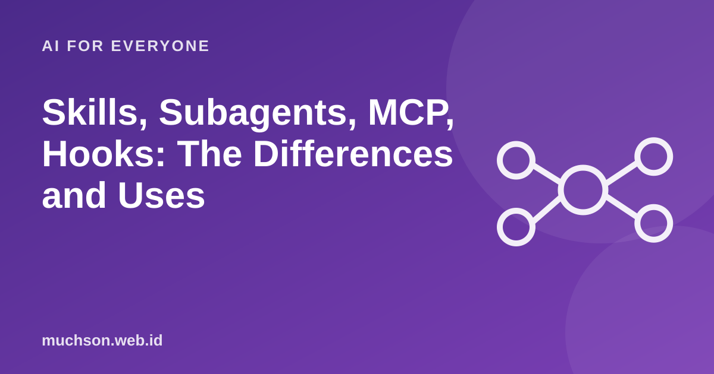

Home › Articles › AI for Everyone
AI for EveryoneSkills, Subagents, MCP, Hooks: The Differences and Uses
In the coding-agent ecosystem there are four ways to extend what it can do: skills, subagents, MCP and hooks. Many people pick the wrong one because the terms sound alike. Yet each answers a different need.

One sentence for each
| Feature | Function | Analogy |
|---|---|---|
| Skills | A package of instructions and resources loaded when needed for a particular task | A recipe book of procedures |
| Subagents | A separate agent with its own context for a particular task | An assistant who does the research and reports back briefly |
| MCP | A standard for connecting the agent to outside tools and data | A universal plug |
| Hooks | Commands that run automatically on particular events | An alarm or an automatic trigger |
Text description of the diagram
Horizontal axis: Extending abilities. Vertical axis: Guaranteeing it always happens.
- Top left: Hooks: Certain to run on particular events
- Top right: Skills: A procedure used when relevant
- Bottom left: Subagents: Separating out noisy context
- Bottom right: MCP: Connecting to outside tools and data
When to use which?
A sensible order for beginners
- Start with a short CLAUDE.md.
- Turn the instructions you type repeatedly into a skill.
- Add MCP only for tools you really use.
- Use hooks for things that must always happen.
- Use subagents when the conversation context often fills up.
Note
These features develop fast and the details change. Use this article to understand their roles, then refer to the official documentation for the latest installation and syntax.
FAQ
Do I need all four?
No. Start simple. Add a feature only when there is a real problem it solves.
Is a skill the same as a saved prompt?
Similar, but a skill can hold instructions, scripts and resources that are loaded when relevant, so it is more structured.
Is it safe to install an MCP server from someone else?
It is risky if you do not know it. Check the source and its permissions, and limit access as far as possible.